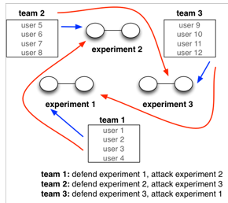
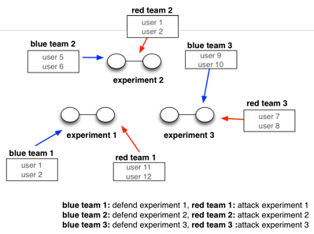

Important
This page is deprecated. Currently we do not support competitions on our new platform, but we hope to add support for this in early 2024.
Competitions on DETERLab
DETERLab can be used to run attack/defense exercises between teams of students or researchers. In such an exercise, a given experiment will be accessed by two teams - a blue (defense) team and a red (offense) team. DETERLab competitions UI enables:
- Easy creation of experiments and teams
- Specification of which teams can access which experiments and which machines in an experiment
- Experiment setup (swap in, application installation)
- Competition scoring
- Experiment termination
Enabling competitions
If you wish to run competitions within your DETERLab project, please submit a ticket and provide rough estimates of how often you would run and how many machines you would need. We will review and enable competitions feature for your project.
New competition
You can create a new competition from your "My DETERLab" view. There will be a "Competitions" tab once you have a competition-enabled project. From that tab, you can click on the left-hand menu option "New competition".
The dialogue will ask you for the competition name and folder path. You should specify a unique name, such that no current experiments of your contain it as a prefix (e.g., you can specify 'comp' if you have no experiments whose name starts with 'comp'). The folder path should lead to a folder which has at least two files inside it: (1) cctf.ns file, describing the topology of an experiment that will be used for the competition and (2) start.pl, specifying a script to set up software on and limit access to experimental nodes. There are several competitions in shared materials, which you can reuse. You should also read our guide to writing competition scripts.
The dialogue will also ask you how many copies of the competition you need and whether team assignment should be "paired" or "circular". The figures below illustrate these two assignment types.
In a circular assignment there are as many teams as there are experiments. Each team defends one experiment and attacks one other experiment. This team assignment enables participants on each team to play both defensive and offensive roles.

In a paired assignment the number of teams is twice that of the experiments. Each team either defends one experiment or attacks one experiment. This team assignment places each participant into either offensive or defensive role.

Once you click "Submit" DETERLab will create a number of experiments and teams for your competition.
Writing start up scripts for competitions
A good start up script for a competition has the following properties: - Is project and experiment agnostic - it takes project and experiment names as arguments from command line. This enables scaling and portability. - Limits access to specific experiment's nodes to red/blue team or removes access to all teams - Installs needed software - Starts scoring - Makes any changes persist through reboots - Ends up with node reboot
Please start from our sample script with these features and version it to satisfy your needs.
Note
Don't forget to make your script executable
Managing your competition
Once your competition is created you can see it in the competitions tab. You can set it up, run it or destroy it.
Set up
Set up includes: (1) specifying which teams can access which machines, (2) assigning participants to teams.
Team access
Each experiment has a number of machines. You can specify which team can access each machine: defense (blue) team, offense (red) team or none. Blue team machines will be defended in a competition, red team machines will be used to launch attacks on blue team. You can use machines with no-team access for scoring or infrastructure set up (e.g. set up DNS root server that can be queried but not modified by teams). When you are finished, click "Assign" then "Done". You can always repeat this action, as long as the competition is not swapped in. Otherwise, you have to swap it out to change team access.
Bulding teams
You can assign a participant to a team by dragging him/her into the gray blocks for the desired team. A participant can belong to at most one team. When you are finished click "Assign" then "Done". You can always repeat this action, as long as the competition is not swapped in. If a participant shows up after you have swapped in the competition, you have to swap out, add the participant, and swap in again.
Run
Running a competition requires that machines be assigned to it, and software set up on those machines.
Allocating machines
When you click "Allocate" in the "Run" screen for your competition all related experiments will start swap-in. All experiments must successfully swap in before you can proceed.
Setting up software
You can set up necessary software for the competition manually but this does not scale. A better option is to put all your set up commands into start.pl script in your competition folder path. This script will be run when you click "Install" button in the "Run" screen. It will be run once per each experiment and the project and experiment names will be passed to the script. Our sample start.pl script in guide to writing competition scripts sets up limited access to machines, as specified in "Team access" option and makes sure that these changes remain in effect after reboots. After all the set up actions are completed, the script reboots the machines. It is also a good idea to start your scoring script at the time when you install the software. The scoring script should run periodically and update the "score" file in each experiment's "tbdata" directory. Please see guide to writing competition scripts for a full example.
Starting the competition
When teams are ready to start please click the "Start" button in the "Run" screen to zero out the score. You can also use this button to reset the score.
Scoring the competition
If you followed our guide to writing competition scripts team scores will be continuously updated. You can see them by clicking on the "Score" button. The score will be shown per experiment and broken into "red" and "blue" parts for offense and defense teams.
Retiring the competition
You can release the machines (swap out) when your competition is done. This action does not affect any of the competition's software or logs.
Destroy
When you are completely done with your competition, click the "Destroy" button. This will remove all the experiments and teams. It is important to clean up your competitions when you don't need them anymore to preserve DETERLab's resources.